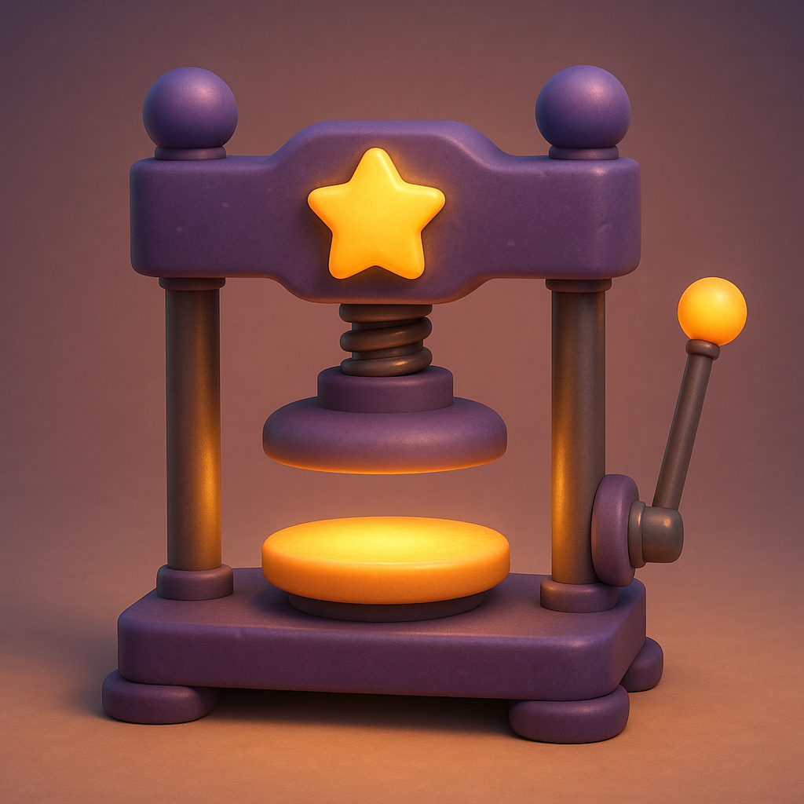

About the Show
Meet Pip
Pip is a small, chubby river otter with an enormous appetite for discovery. He wears round teal goggles (always — safety first!), a mustard-yellow utility vest with two front pockets, and a small red heart stitched on his chest, close to his own.
Pip never speaks a word. He doesn't need to: his squeaks, trills, gasps of wonder, and triumphant "Pip-pip!" say everything. When an experiment surprises him — and they always do — his eyes go wide, his paws fly to his cheeks, and somewhere, a viewer smiles.
The Mystical Press

The heart of the workshop is The Mystical Press: a chunky, toy-like plum-purple hydraulic press crowned with a glowing golden star. Objects rest on its warm amber pedestal; Pip pulls the single side lever, the platen descends with a soft hydraulic hiss, and purple magic swirls as the squeeze works its wonders.
The press doesn't transform things into other things — that would be cheating. It presses. What matters is what the object does under all that mystical pressure: erupt, shimmer, crumble into something beautiful, or occasionally prove too powerful for the poor machine entirely.
The Workshop
Pip's workshop is a cozy, clay-rendered hideaway: soft tan walls, a rounded arched window pouring in golden light, a little wooden shelf of books and jars, and faint purple sparkles forever drifting through the air. Alongside the press live his other contraptions — a glass-domed vacuum chamber, a shrink-and-grow ray, a freeze chamber, and a giant horseshoe magnet — each awaiting its turn in an experiment.
The Format
Every episode is a single continuous 8-second scene in vertical format, built for YouTube Shorts, Instagram Reels, Facebook Reels, and TikTok. One object, one machine, one satisfying payoff — no cuts, no filler, family-friendly always. New episodes are written and produced daily, often themed to the day's holidays, seasons, and trends.